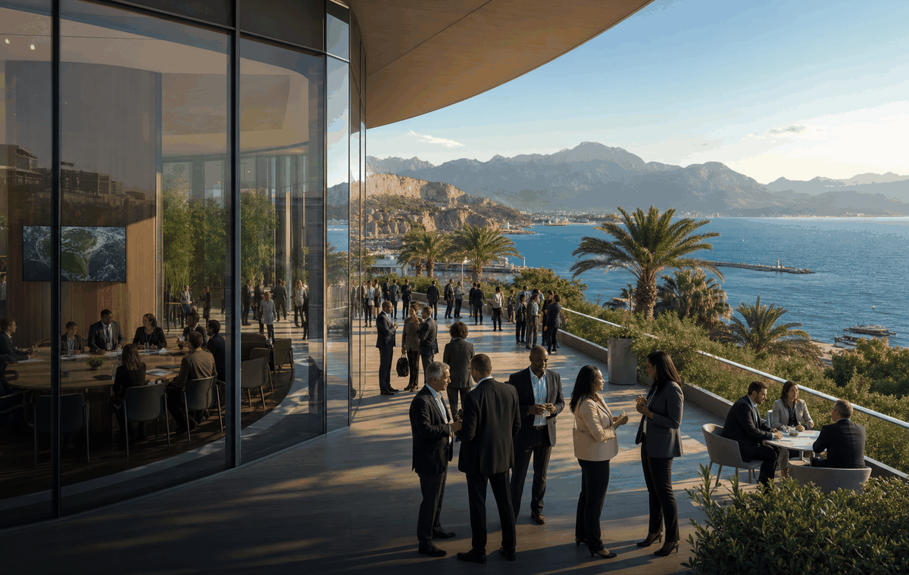

العمل المناخي - 2026
مؤتمر الأمم المتحدة لتغير المناخ COP31
مؤتمر الأمم المتحدة لتغير المناخ COP31 يربط التقويم المناخي بالاستعداد والمشاركة العامة والعمل المحلي.
الدولةأنطاليا، تركيا
المدينةAntalya
المكانمقر مؤتمر الأمم المتحدة للمناخ
التواريخ9-20 November 2026
ما يجب معرفته
- هذا حدث مناخي في تقويم OneSliders وليس صفحة توقعات يومية.
- تساعد الصفحة على فهم التاريخ والمكان والسياق العملي.
- ترتبط الرسالة بالاستعداد وحماية البيئة والعمل العام.
- تستخدم الروابط والصور نفسها عبر اللغات مع نص محلي.
إيقاع الحدث
| اليوم | المرحلة | ما يحدث |
|---|---|---|
| قبل الموعد | تحضير | تعلن الجهات المحلية والشركاء عن الرسائل والأنشطة. |
| يوم الحدث | تنفيذ | تظهر الفعاليات والبيانات والعمل العام. |
| بعد الموعد | متابعة | تتحول الرسالة إلى تعليم وتخطيط وعمل محلي. |
مرتبط على OneSliders
المصادر: UNFCCC COP31 خارجي
تم التحديث 14 مايو 2026